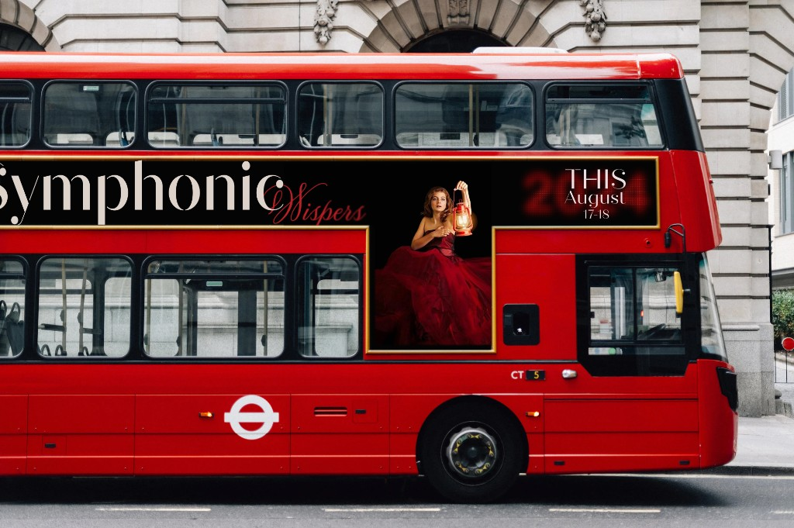
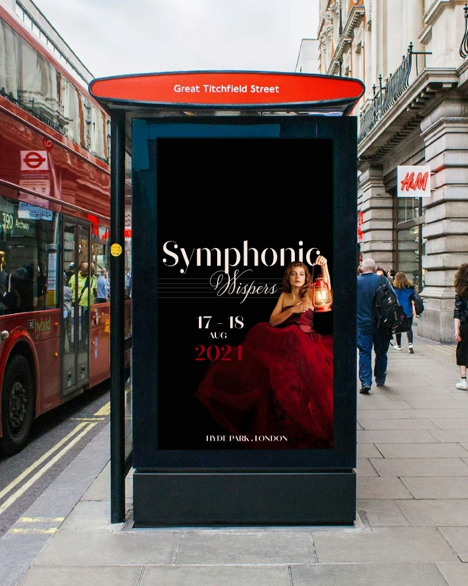

Symphonic Whispers
Symphonic Whispers is a branding project exploring visual storytelling for a music festival.
The brief challenged me to translate music into a visual language that communicates atmosphere, emotion, and narrative. Drawing inspiration from classical music and theatrical imagery, I explored contrast, typography, and composition to create a sense of drama and intimacy.
The identity was designed as a flexible system, allowing it to adapt across multiple touchpoints, including posters, outdoor advertising, vinyl records, and digital applications. Through this project, I focused on developing a cohesive visual direction while experimenting with storytelling, scale, and context, from large public formats to more intimate, screen-based experiences.

